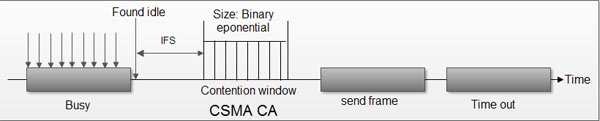

- Начало
- CSMA/CA
- Режими на работа
Как работи
CSMA/CA пропуска колизиите като използва три базови техники:
- Interframe space
- Contention window
- Acknowledgement

1. Interframe space
- Всеки път, когато каналът е намерен праен, станцията не предава веднага. Тя изчаква за определен
период от време наречен interframe space(IFS)
- Когато каналът е намерен празен е възможно текущата станция да е започнала да предава и сигналът да
не е достигнал останалите станции.
- Ето защо целта на IFS е да осигури време на сигнала да достигне до крайните точки.
- Ако след това време каналът е все още празен, станцията може да изпраща, но все още е необходимо да
се изчака известно време.
- IFS променлива може да се използва за определяне на приоритета на станция или рамка.
2. Contention window
- Това е период от време разделен на слотов.
- Всяка станция, която е готова за изпращане избира произволен брой слотове като нейно време за
изчакване.
- Броят на слотовете в прозореца се променя съобразно с двоичната експоненциална стратегия. Това
означав, че той е настроен на един слот за пръв път и след това се удвоява всеки път и станцията не
може да засече празен канал след IFS.
- Тук станцията трябва да долови канала след всеки интервал от време.
- Ако станцията намира зает канал, не се рестартира процеса. Той просто спира таймера и го рестартира,
когато каналът се изпразни.
3. Acknowledgement
- Въпреки всички предпазни мерки, колизии могат да се появят и да унищожат данните.
- Положителното потвърждение и спирането на таймера могат да гарантират, че приемника е получил
пратката.